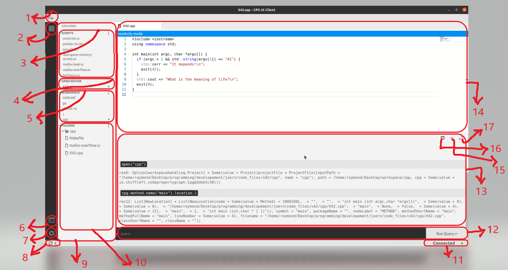
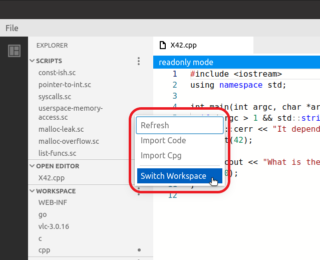
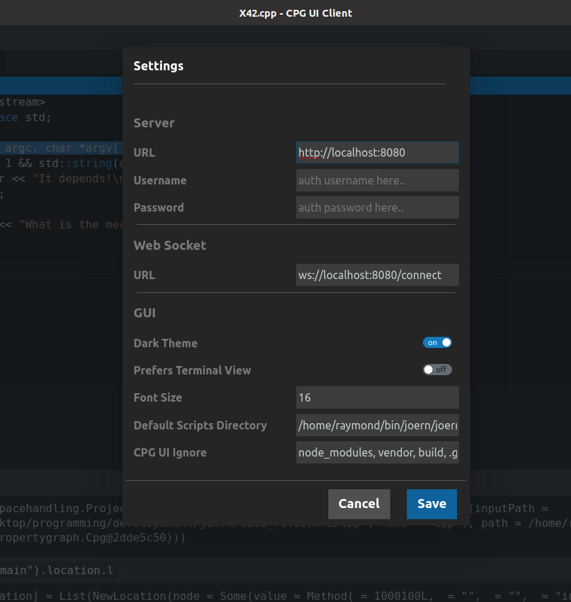
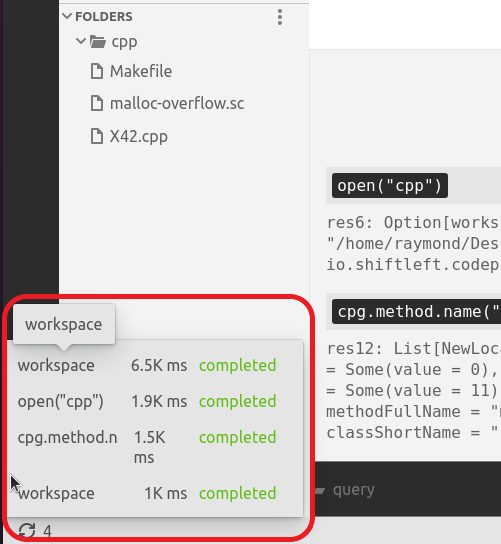
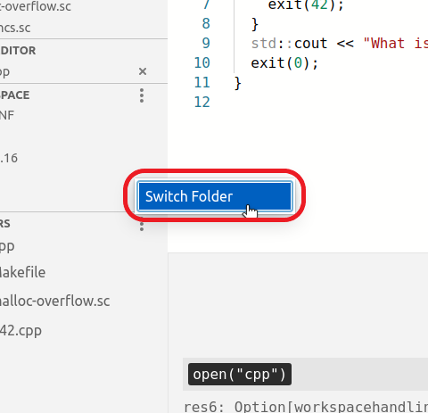
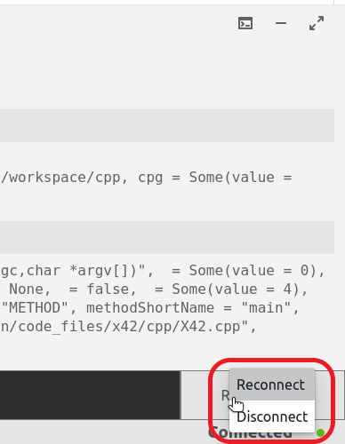

Usage
Below is a labeled diagram of the main sections of CPG UI Client;
- File Menu
- Explorer section toggle control
- Scripts section
- Opened files section
- Workspace section
- Terminal section toggle control
- Settings modal toggle control
- Queries status section
- Explorer section
- Folders section
- Server connection status section
- Query input section
- Terminal view section
- Editor section
- Terminal hide control
- Terminal mode toggle control
- Terminal minimize/maximize control
2. Explorer section toggle control
This control button can be used to collapse and expand the whole explorer section.
3. Scripts section
This section is where all the scripts under the current default scripts folder are displayed. Scripts can be created, edited, and deleted through the editor but other files can only be viewed on the editor. * To further organize your scripts, you can add a special type of comment (e.g. //<tag>my new tag</tag>)
to your script files and the scripts will be organized according to the tag name added in the comment

- Clicking on the “more” icon at the top right-hand side of the script section reveals a hidden menu through which you can perform actions such as deleting selected scripts or changing the default scripts folder.
- you can select multiple scripts to delete by holding down the “ctrl” button and clicking on the scripts you want to select.
- To delete a single script, right-click on the script to reveal the “delete” context menu
4. Opened files section
Here you will see all the files that are currently open in the editor. Clicking on a file makes it the active file on the editor
5. Workspace section
This section contains all the projects open in a particular workspace. * If the workspace does not contain any project, you will be asked to import a project. * Clicking on the “more” icon at the top right-hand side of the workspace section
reveals a hidden menu where you can perform actions like importing a project, deleting a project, and switching to a different workspace
- Right-clicking on individual projects also reveals a context menu where you open, close, and delete a single project
6. Terminal section toggle control
This control determines if the terminal section should be hidden or visible.
7. Settings modal toggle control
Clicking on this toggles the settings modal. In the settings, you can specify the URL (and WebSocket URL) to the backend you want the client to connect. You can also change things like server authentication, font size, theme, large folders to be ignored when rendering sections like the folder and scripts section.
8. Queries status section
This indicates whether there is a currently running query or not, and how many queries have been run since the tool was opened. Hovering on this section reveals additional details showing all previously ran queries, status (pending or completed), and total time it took to run the query.
9. Explorer section
This section houses other sections like folder section, workspace section, etc.
10. Folders section
This section is where the folder structure of the currently active project is displayed. * You can inspect the folders and files of the currently active project. * When you click on a file in the folder section, the file will be opened in the editor. * Clicking on the “more” icon at the top right-hand side of the folder reveals a hidden menu through which you can change the folder in view by selecting any folder of your choice.
11. Server connection status section
This section indicates the UI client’s connection status to the server. * If the server with the server URL in the settings is not active, the connection status will be “failed” and queries won’t work. * You can right-click on this section to manually connect and disconnect from the server
12. Query Input section
Just like you can perform certain actions (like opening, closing, and importing projects) through the GUI alone without typing any queries, you can also choose to manually type your queries instead. * To type queries manually, this section is where input your manual queries (in the more terminal-like view, you input your queries in a terminal-like view instead) * Queries and results will appear on top according to the order you ran them.
13. Terminal view sectionScripts
This is the place where you can view queries and their results (in the terminal-like view, this looks like a traditional terminal view)
14. Editor section
This is the section where scripts can be viewed and edited. Other files that are not scripts can only be viewed here, the editor only allows read-only mode for those files.
15. Terminal hide control
This controls whether the terminal section is visible or not.
16. Terminal mode toggle control
With this, you can control the view of the terminal section. * If you prefer a more command line-like interface or a rich GUI mode, you can select it by toggling this control
17. Terminal minimize/maximize control
As the name suggests, this can be used to minimize or maximize the terminal.